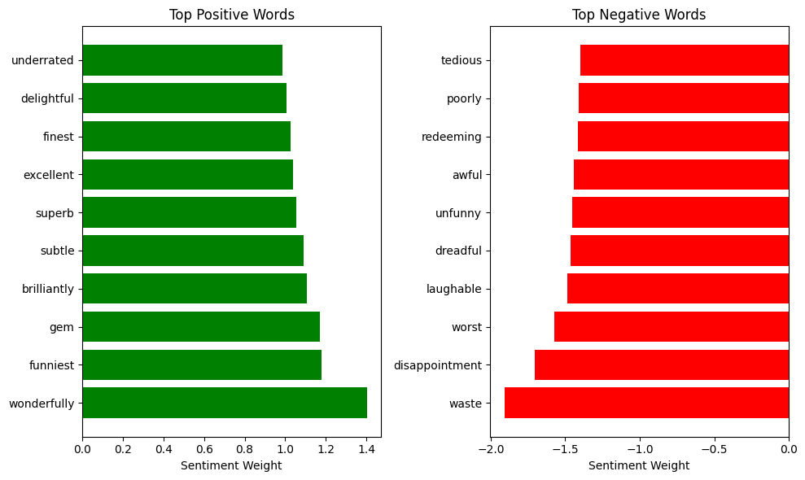

import pandas as pd
from sklearn.feature_extraction.text import CountVectorizer
from sklearn.linear_model import LogisticRegression
import matplotlib.pyplot as pltClassifying IMDB movie reviews

Importing packages
Loading the dataset
!curl -O https://raw.githubusercontent.com/aavelozb/aavelozb.github.io/main/data/IMDB_Dataset.csv
movies = pd.read_csv("IMDB_Dataset.csv")
movies.head() % Total % Received % Xferd Average Speed Time Time Time Current
Dload Upload Total Spent Left Speed
100 63.1M 100 63.1M 0 0 15.4M 0 0:00:04 0:00:04 --:--:-- 15.4M| review | sentiment | |
|---|---|---|
| 0 | One of the other reviewers has mentioned that ... | positive |
| 1 | A wonderful little production. <br /><br />The... | positive |
| 2 | I thought this was a wonderful way to spend ti... | positive |
| 3 | Basically there's a family where a little boy ... | negative |
| 4 | Petter Mattei's "Love in the Time of Money" is... | positive |
# Relabeling the 'sentiment' column as 0's and 1's
movies['sentiment'] = movies['sentiment'].map({'positive': 1, 'negative': 0})
movies.head()| review | sentiment | |
|---|---|---|
| 0 | One of the other reviewers has mentioned that ... | 1 |
| 1 | A wonderful little production. <br /><br />The... | 1 |
| 2 | I thought this was a wonderful way to spend ti... | 1 |
| 3 | Basically there's a family where a little boy ... | 0 |
| 4 | Petter Mattei's "Love in the Time of Money" is... | 1 |
# Create word features (limit to top 5000 words for efficiency)
vectorizer = CountVectorizer(max_features=2000, stop_words='english')
X = vectorizer.fit_transform(movies['review'])
y = movies['sentiment']# Train logistic regression (linear model for interpretable weights)
model = LogisticRegression(max_iter=1000)
model.fit(X, y)LogisticRegression(max_iter=1000)In a Jupyter environment, please rerun this cell to show the HTML representation or trust the notebook.
On GitHub, the HTML representation is unable to render, please try loading this page with nbviewer.org.
LogisticRegression(max_iter=1000)
# Get feature names (words) and their coefficients
# NOTE: if using a older version of scikit-learn, change get_feature_names_out with get_feature_names
feature_names = vectorizer.get_feature_names_out()
word_weights = model.coef_[0] # Weights for positive sentiment
# Create DataFrame of words and their sentiment scores
word_sentiments = pd.DataFrame({
'word': feature_names,
'weight': word_weights
})
# Sort words by sentiment strength
most_positive = word_sentiments.sort_values('weight', ascending=False).head(10)
most_negative = word_sentiments.sort_values('weight').head(10)print(most_positive)
print(most_negative) word weight
1964 wonderfully 1.402740
736 funniest 1.180730
748 gem 1.170285
221 brilliantly 1.108348
1707 subtle 1.090787
1720 superb 1.055670
595 excellent 1.039736
686 finest 1.025482
449 delightful 1.007821
1853 underrated 0.984871
word weight
1921 waste -1.908861
491 disappointment -1.702683
1977 worst -1.575459
1009 laughable -1.483545
517 dreadful -1.463487
1858 unfunny -1.455436
142 awful -1.440561
1440 redeeming -1.415848
1337 poorly -1.412086
1756 tedious -1.401159# Plot top positive/negative words
plt.figure(figsize=(10, 6))
# Positive words
plt.subplot(121)
plt.barh(most_positive['word'], most_positive['weight'], color='green')
plt.title('Top Positive Words')
plt.xlabel('Sentiment Weight')
# Negative words
plt.subplot(122)
plt.barh(most_negative['word'], most_negative['weight'], color='red')
plt.title('Top Negative Words')
plt.xlabel('Sentiment Weight')
plt.tight_layout()
plt.show()
# Predict sentiment scores for all reviews
predictions = model.predict_proba(X)[:, 1] # Probability of positive sentiment
# Add scores to the DataFrame
movies['predictions'] = predictions
# Find the most positive and negative reviews
most_positive_review = movies.sort_values('predictions', ascending=False).head(1)
most_negative_review = movies.sort_values('predictions').head(1)
print("Most Positive Review:")
display(most_positive_review)
print("\nMost Negative Review:")
display(most_negative_review)Most Positive Review:| review | sentiment | predictions | |
|---|---|---|---|
| 42946 | By now you've probably heard a bit about the n... | 1 | 1.0 |
Most Negative Review:| review | sentiment | predictions | |
|---|---|---|---|
| 13452 | Zombi 3 starts as a group of heavily armed men... | 0 | 2.436098e-17 |
print(most_positive_review['review'].iloc[0])By now you've probably heard a bit about the new Disney dub of Miyazaki's classic film, Laputa: Castle In The Sky. During late summer of 1998, Disney released "Kiki's Delivery Service" on video which included a preview of the Laputa dub saying it was due out in "1999". It's obviously way past that year now, but the dub has been finally completed. And it's not "Laputa: Castle In The Sky", just "Castle In The Sky" for the dub, since Laputa is not such a nice word in Spanish (even though they use the word Laputa many times throughout the dub). You've also probably heard that world renowned composer, Joe Hisaishi, who scored the movie originally, went back to rescore the excellent music with new arrangements. Laputa came out before My Neighbor Totoro and after Nausicaa of the Valley of the Wind, which began Studio Ghibli and it's long string of hits. And in my opinion, I think it's one of Miyazaki's best films with a powerful lesson tuckered inside this two hour and four minute gem. Laputa: Castle in the Sky is a film for all ages and I urge everyone to see it.<br /><br />For those unfamiliar with Castle in the Sky's story, it begins right at the start and doesn't stop for the next two hours. The storytelling is so flawless and masterfully crafted, you see Miyazaki's true vision. And believe me, it's one fantastic one. The film begins with Sheeta, a girl with one helluva past as she is being held captive by the government on an airship. Sheeta holds the key to Laputa, the castle in the sky and a long lost civilization. The key to Laputa is a sacred pendant she has which is sought by many, namely the government, the military and the air pirate group, the Dola gang (who Sheeta and Pazu later befriend). Soon, the pirates attack the ship and she escapes during the raid. She falls a few thousand feet, but the fall is soft and thanks to her pendant. As she floats down from the sky, Pazu, an orphan boy who survives by working in the mines, sees Sheeta and catches her. The two become fast friends, but thanks to her pendant, the two get caught up in one huge thrill ride as the Dola gang and government try to capture Sheeta. One action sequence after another, we learn all of the character's motives and identities as we build to the emotional and action packed climax which will surely please all with it's fantastic animation and wonderful dialogue. Plus somewhat twisty surprise. I think this film is simply remarkable and does hold for the two hour and four minute run time. The story is wonderful, as we peak into Hayao Miyazaki's animation which has no limits. The setting of the film is a combo of many time periods. It does seem to take place at the end of the 1800s, but it is some alternante universe which has advanced technology and weapons. Laputa is also surprisingly a funny film. The film has tons of hilarious moments, almost equal to the drama and action the film holds. I think the funniest part is a fight scene where Pazu's boss faces off against a pirate, and soon after a riot breaks out. It's funny as we see the men compare their strength and the music fits right in with it perfectly.<br /><br />Now let's talk about how the dub rates. An excellent cast give some great performances to bring these characters to life. Teen heartthrob James Van Der Beek plays the hero Pazu, who has a much more mature voice then in the Japanese version, where in the original he sounded more childlike. Either way, I think his voice is a nice fit with Pazu. Anna Paquin, the young Oscar winner from "The Piano", plays Sheeta. This is also a nice performance, but the voice is a bit uneven, she doesn't stay true to one accent. At times she sounds as American as apple pie, but at other times she sounds like someone from New Zealand. The performance I most enjoyed however was of Coris Leachman, who played Mama Dola. Not only is this an excellent performance, but the voice and emotion she gives the character really brings it to life. If there was ever a live action Laputa movie (G-d forbid), she would be the one to play her, you can just imagine her in the role (well, somewhat). Luke Skywalker himself, Mark Hamill is Muska, and this is another top rate Hamill performance. You may be familiar with Hamill from a long line of voice work after he did the original Star Wars movies, but he renders Muska to full evil. His voice sounds like his regular voice and mix of the Joker, who he played for many episodes on the animated Batman series. Rounding out the cast is voice character actor Jim Cummings, who does a great, gruff job as the general and Andy Dick and Mandy Patakin as members of the Dola gang.<br /><br />Now let me talk about what really makes this dub special, Joe Hisaishi's newly arranged music! For those who have never heard of him, Mr. Hisaishi does the music and like all of Miyazaki's films, the music is very memorable. Each of his scores has it's own personas which fits the particular film perfectly. Now, these new arrangements he has done are more "American like", which I think was the goal of the new recordings. Don't worry, the classic tunes of the Japanese version are still here in great form. The score, to me, sounds to be arranged like this is a Hollywood blockbuster. It has more power, it has more emphasis, it's clearer and deeper. The film's prologue, the first seconds where we are introduced to the airships, has some new music (I am not sure, but I believe when we first saw the ships there was no music at all). But a majority of the music has new backdrops and more background music to enjoy. Things seem very enhanced. In a powerful scene, the music is more stronger then in the original versions. In a calm scene, it's more calmer. Overall, I think many of you will be pleased with the new arrangements an mixes, I highly did myself, and personally think it helps improve the film. I prefer the new score over the old one, and I hope Disney will release or license the music rights to a full blown soundtrack.<br /><br />Another plus side to the dub is that the story remains faithful, and much of the original Japanese lines are intact. In Kiki, I'm sure a few lines where changed, and this is the same way, lines have been changed. But a majority are close or exactly the original lines and dialogue Miyazaki has written. I was afraid some excellent lines would be butchered, but they were there intact. Some new lines have been added as well which help out. But I am not sure whether to consider this a good thing or a bad thing, Disney DID NOT translate the ending song, it was in Japanese. I was mortified when they did completely new songs for the Kiki dub, but with this version it's the original song... in Japanese. So I guess it's good it's still the original, but bad since a majority of people seeing this dub speak English.<br /><br />There is a big down side to this dub, and it deals with how the voices match the character's lips. Of course in any dub it won't be perfect, but I think in Kiki and Mononoke the dubbing of lines to match were much better executed (and Disney had a little bit more time with this one...). Some of the time everything matches perfect, some of the time it doesn't completley match, and in a rare case, someone says something and the lips don't move at all (there's a scene where Sheeta chuckles and her mouth doesn't move one bit).<br /><br />As far as things about the film itself, these are my thoughts. I thought the most amazing part of Laputa was the animation. From the opening sequence to the ending, the animation is so lush and detailed, you just have to watch in awe. You see the true nature of each character, true detail to their face with extreme close ups and action. You have to give a ton of credit for the effort that these animators put into this film. Everything is so well done and beautifully hand drawn, it's like a moving piece of art. And to think, this was done in the mid 1980's. The animation is quite different from Disney, Ghibli has it's own distinctive flare which is very different, but very good. And after all these years, the colors look as vibrant as ever. Laputa also has tons of action sequences, lots of plane dogfights plus a few on ground. These sequences are so well done and so intriguing, it's scary that they are comparable to a big budget action film. And the finale is just something you MUST see. The sound effects are pure and classic and fit explosions, guns firing and everything else well. And like all Miyazaki films, each one focuses on a different theme (i.g. Kiki: Confidence). This one has a great a lesson on greed and power. People don't realize how greed can take over you, and how having too much power isn't good. People are obsessed with power, and are greedy, and the main villian, Muska, greatly shows this.<br /><br />All in all, Laputa: Castle In The Sky was a great film to begin with, and is now improved for the most part. I am glad a more mainstream audience now have the chance to see this classic animated film in all it's glory. With a great voice cast who put a lot into the film with the excellent redone musical score from Joe Hisaishi, Disney has done a nice job on this dub and is quite worthy. Though I think the voices matched the mouths better in the Kiki and Princess Mononoke Disney dubs, Castle In The Sky is still a great dub and is worth the long delays because now more can expierence a fantastic film.print(most_negative_review['review'].iloc[0])Zombi 3 starts as a group of heavily armed men steal a experimental chemical developed to reanimate the dead, while trying to escape the man is shot at & the metal container holding the chemical is breached. The man gets some of the green chemical on a wound on his hand which soon after turns him into a flesh eating cannibalistic zombie. Within hours the surrounding area is crawling with the flesh easting undead on the look out for fresh victims, Kenny (Deran Sarafian) & his army buddies find themselves in big trouble as they stop to help Patricia (Beatrice Ring) & her friend Lia (Deborah Bergammi) who has been pecked by zombie birds (!). General Morton is in charge of the situation & has to stop the zombie plague from spread throughout the whole world! But will he & his men succeed?<br /><br />This Italian produced film was to be directed by Italian zombie gore film auteur Lucio Fulci but the story goes he suffered a stroke & therefore couldn't finish the film so producer Franco Gaudenzi asked second unit director Bruno Mattei & writer Claudio Fragasso to step in & complete the film. Apparently Mattei & Fragasso did more than just finish it they actually disregarded a lot of the footage Fulci shot & added a lot of their own & Zombi 3 ended up as nearly a straight 50/50 split. The script by Fragasso is an absolute mess, none of it is well thought out & is just as stupid as it gets. The scenes of zombie birds attacking people are not only technically inept but the whole idea is just absurd. The zombies themselves have no consistency whatsoever, look at the scene where Patricia is on the bridge & the zombies are slow as they shuffle along but then look at the scene earlier on where she was attacked by the zombie with the machete because that one runs around like it's on steroids, then for no reasonable explanation about 10 minutes before the film finishes the zombies suddenly develop the ability to speak which also looks daft. There are so many things wrong with Zombi 3, scene after scene of terribly thought out & ineptly directed action, awful character's & really dull broken English dialogue which doesn't make sense half the time. Then there's the embarrassing scene where the zombie head inside the fridge suddenly develops the ability to fly through the air & bite someones neck, the scene when the guy's in white contamination suits at the end are about to kill Kenny & Roger but instead of using their automatic rifles they decide to try & kill them by hand, even when Kenny picks up a gun himself they still refuse to use their rifles & when Kenny starts to shoot them all they still refuse to use their rifles & it's one of the most ineptly handled scenes ever put to film & then there's the end where Kenny takes off in the helicopter but can't rest it down on the ground for literally a few seconds to pick his buddy up & then a load of zombies suddenly spring up from under some piles of grass, what? Since when did zombies hide themselves yet alone under piles of grass? This all may sound 'fun' but believe me it's not, it's a really bad film that is just boring, repetitive & simply doesn't work on any level as a piece of entertainment except for a few unintentional laughs.<br /><br />It's hard to know who was responsible for what exactly but none of the footage is particularly well shot. It has a bland lifeless feel about it & for some reason the makers have tried to bath every scene in mist, the problem is they clearly only had one fog machine & you can see that at one corner of the screen the mist is noticeably thicker as it is coming straight out of the machine & thinning out as it disperses across the scene. Since a lot of it is set during the day it doesn't add any sort of atmosphere whatsoever & when they do get it right & the mist is evenly spread across the screen it just looks like they shot the scene on a foggy day! The direction is poor with no consistency & it just looks & feels bottom of the barrel stuff. Even the blood & gore isn't up to much, there's a gory hand severing at the start, a scene when something rips out of a pregnant woman's stomach, a legless woman (what actually took her legs off in the pool by the way & why didn't it take the legs off the guy who jumped in to save her?) & a few OK looking zombies is as gory as it gets. For anyone hoping to see a gore fest the likes of which Fulci regularly served up during the late 70's & early 80's will be very disappointed, there aren't any decent feeding scenes, no intestines, no stand out 'head shots' & very little gore at all.<br /><br />Technically the film is poor, the special effects are cheap looking, the cinematography is dull, the music is terrible, the locations are bland & it has rock bottom production values. This was actually shot in the Philippines to keep the cost down to a minimum. The entire film is obviously dubbed, the acting still looks awful though & the English version seems to have been written by someone who doesn't understand the language that well.<br /><br />Zombi 3 is not a sequel to Fulci's classic zombie gore fest Zombi 2 (1979), it has nothing to do with it at all apart from the cash-in title. I'm sorry but Zombi 3 is an amateurish mess of a film, it's boring, it makes no sense, it's not funny enough to be entertaining & it lacks any decent gore. One to avoid.